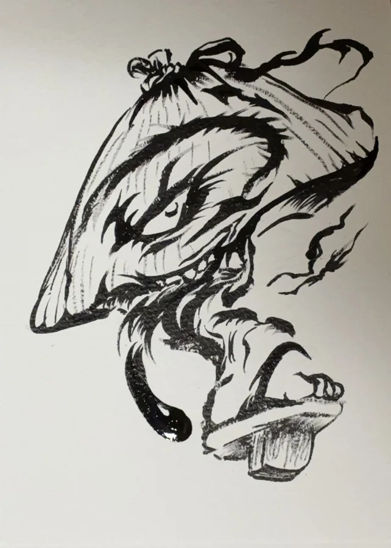
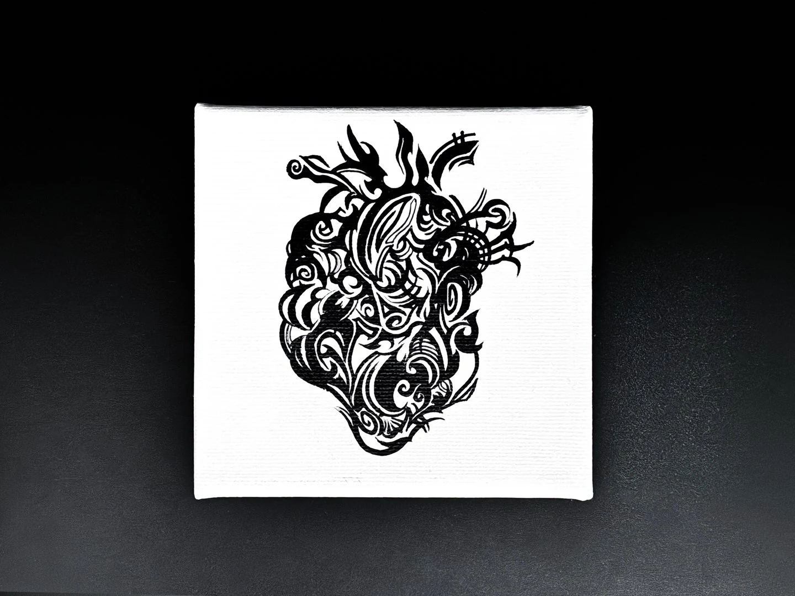

Creatures
in sumi ink.
TENTENDOU is an artist in Japan whose brushwork grew out of calligraphy.
See selected work

Yōkai
Creatures from Japanese folklore, drawn by hand. For Karakasa-kozō, I pulled the largest drop of ink across the paper to make the umbrella’s tongue.

Silent Anatomy
A personal series of ink drawings built around the shapes of organs. The heart and brain are the starting points; the fine lines are drawn by hand.



Work with me
I take on custom ink illustration for books, games, and album covers. Tell me what you’re making and how you’d like to use the artwork.